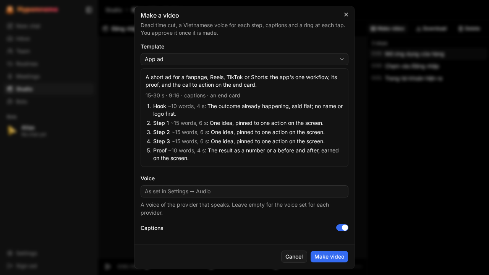
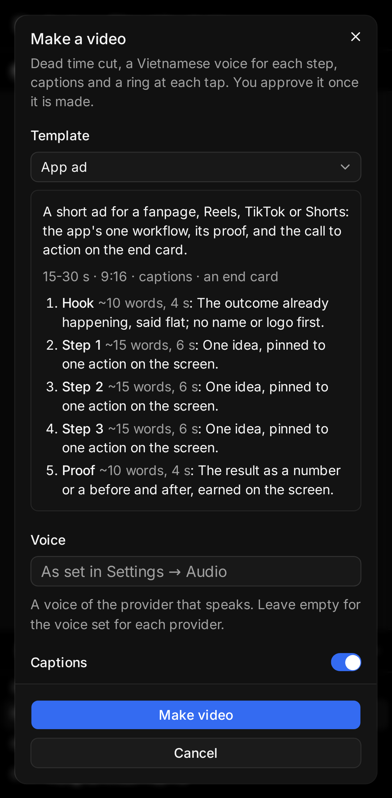
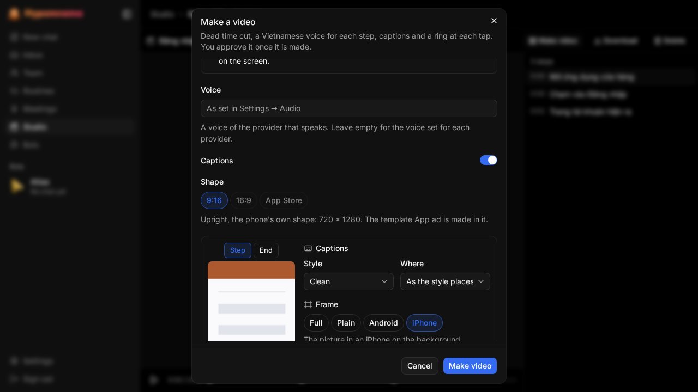
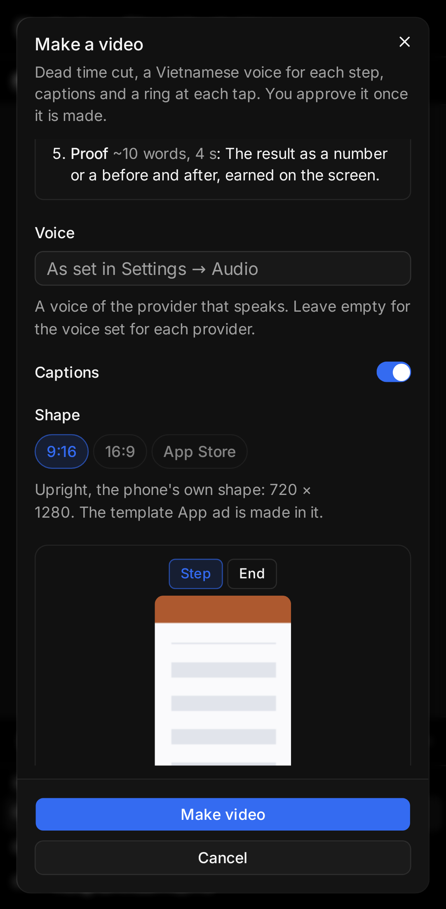

Issue #1230, part 2: Make video's template picker (after review round 1)
From the Playwright spec web/tests/studio.spec.ts, "Make video takes a template, its skeleton shown and its look the start", the built web client against its fake API, dark theme (the headless default).
No template (None): the existing make scenario, 16:9 with captions off, and the third shape
desktopphone
App ad picked: its skeleton

desktop

phone
Shape: 9:16 kept, the shapes App ad is not made in disabled

desktop

phone
Cards: App ad's end card, its call to action "Tải ứng dụng ngay" over the take's title